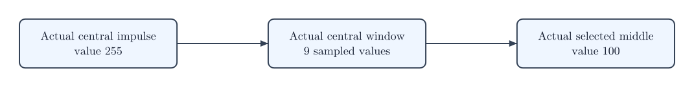
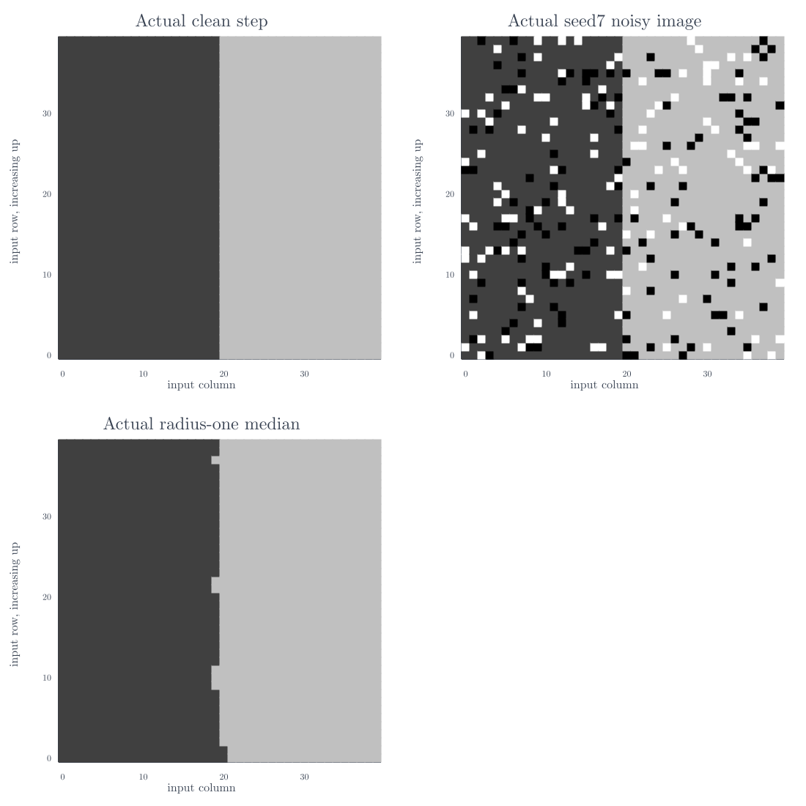
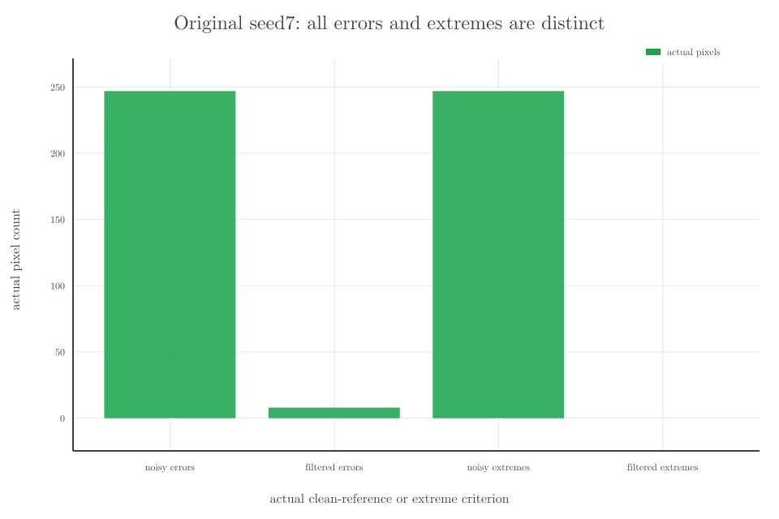
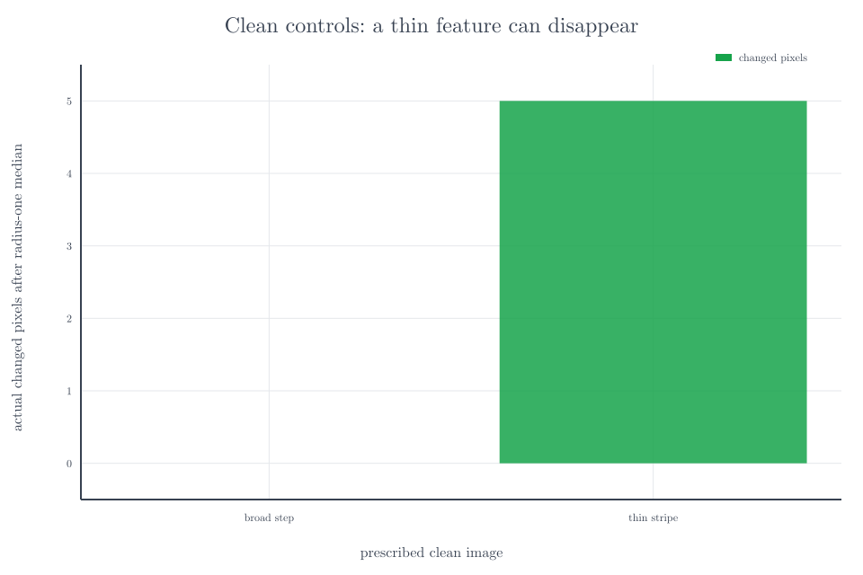

Median filtering
Abstract
A median filter replaces each image pixel with a local middle-ranked value, suppressing isolated impulses without averaging their magnitudes into neighbours. We expose the actual samples selected around a tiny image, retain the original seeded40-square edge/noise experiment, and measure both residual extremes and disagreement with the clean image. Narrow structures can disappear, so noise suppression is not a guarantee that every edge or feature survives.
Derive the local rank objective
A radius r square window has W=(2r+1)^2 samples, with offsets −r..r in both directions. Clamp each source index to the image boundary independently. Border pixels therefore repeat: replicated extension gives those repeated values real multiplicity in the local rank. Every output reads the original input, so the method is a simultaneous nonlinear filter, not a sequential in-place smoothing scan.
If the sorted local samples are v[0]..v[W−1], the median is v[W/2]. For an odd number of samples, a median minimizes the sum of absolute deviations: moving the candidate right increases each left sample’s distance and decreases each right sample’s distance. Below the middle, more samples pull right; above it, more pull left. This local L1 property explains why a single arbitrarily large impulse can be rejected without averaging its magnitude into the output. It does not prove restoration of an unknown clean image.
The producer uses nth_element to select the middle without fully sorting. The trace records actual pre-selection sample reads and the actual selected value, not a fictional sequence of sorting operations. Comparator calls count the actual standard-library execution; exact counts can differ across implementations.
A tiny impulse and real border multiplicities
The3-square image has eight100 values and one central255 impulse. Its central radius-one median is100. The actual corner neighbourhood repeats the original top-left pixel four times; the table exposes every clamped source address read for that corner. The diagram links the real central sample span and selected result.
#include <dm/dm.hpp>
int main() {
std::filesystem::create_directories("build");
auto t =
dm::algorithms::median_filter_trace({{100, 100, 100}, {100, 255, 100},
{100, 100, 100}});
auto &corner = t.pixels.front();
auto ¢re = t.pixels[4];
std::print("| actual corner sample | source row | source column | actual value |\n| ---: | ---: | ---: " "| ---: |\n");
for (std::size_t k = corner.first; k < corner.first + corner.count; ++k) {
auto &s = t.samples[k];
std::print("| {} | {} | {} | {} |\n", k, s.source_row, s.source_col,
s.value);
}
std::print("\nActual centre selected median: {}.\n", centre.median);
dm::graphics::Diagram d;
d.node("input", {0, 0},
std::format("Actual central impulse\nvalue {}", t.input[1][1])).node(
"window", {6, 0},
std::format("Actual central window\n{} sampled values", centre.count)).node("median", {12, 0}, std::format("Actual selected middle\nvalue {}", centre.median)).edge("input", "window").edge("window", "median");
d.save_svg("build/median_filter_tiny.svg");
}| actual corner sample | source row | source column | actual value |
|---|---|---|---|
| 0 | 0 | 0 | 100 |
| 1 | 0 | 0 | 100 |
| 2 | 0 | 1 | 100 |
| 3 | 0 | 0 | 100 |
| 4 | 0 | 0 | 100 |
| 5 | 0 | 1 | 100 |
| 6 | 1 | 0 | 100 |
| 7 | 1 | 0 | 100 |
| 8 | 1 | 1 | 255 |
Actual centre selected median: 100.

Retain the original seeded edge/noise experiment
The native fixture creates the original40-by40 image: columns0..19 contain60 and columns20..39 contain200. In row-major order, mt19937_64 seed7 supplies a uniform draw; draws below0.15 trigger a second draw selecting zero or255 at threshold0.5. We retain every original draw and branch, then call the same radius-one native producer. The standard library’s distribution sequence is reproduced for this build, without a cross-vendor bitstream promise.
The figure uses the same grayscale range0..255 in every panel. Image rows increase upwards in this coordinate display; row0 is the bottom row. Clean/noisy/filtered panels show actual integer images, with no independent image-processing implementation in the report.
#include <dm/dm.hpp>
int main() {
std::filesystem::create_directories("build");
auto d = dm::algorithms::median_filter_demo();
std::print("| actual candidate | pixels | changed from clean | exact zero or255 | mean absolute error | " "maximum absolute error |\n| --- | ---: | ---: | ---: | ---: | ---: |\n");
for (auto pair : {std::pair{"noisy", d.noisy_summary},
std::pair{"filtered", d.filtered_summary}}) {
auto &s = pair.second;
std::print("| {} | {} | {} | {} | {:.8f} | {} |\n", pair.first,
s.pixels, s.changed, s.extremes, s.mean_absolute_error,
s.maximum_absolute_error);
}
auto layout = dm::graphics::RLayout::create(2, 2);
std::vector<double> axis(40);
std::iota(axis.begin(), axis.end(), 0.);
std::size_t index = 0;
for (auto &image : std::vector<std::vector<std::vector<int>> >{
d.clean, d.noisy, d.filtered.image
}) {
std::vector<std::vector<double>> z(40, std::vector<double>(40));
for (std::size_t row = 0; row < 40; ++row)
for (std::size_t col = 0; col < 40; ++col)
z[col][row] = image[row][col];
auto p = dm::graphics::RPlot::create();
p.image(axis, axis, z,
{{0, 0, 0}, {64, 64, 64}, {128, 128, 128}, {192, 192, 192},
{255, 255, 255}}, 0, 255).x_limits(-.5, 39.5).y_limits(-.5,
39.5).x_label("input column").y_label("input row, increasing up").margins(80, 30, 50, 60).title(std::vector<std::string>{"Actual clean step", "Actual seed7 noisy image", "Actual radius-one median"}[index++]);
layout.add(p);
}
layout.size(1100, 1100).fit_panels().save_svg("build/median_filter_original.svg");
}| actual candidate | pixels | changed from clean | exact zero or255 | mean absolute error | maximum absolute error |
|---|---|---|---|---|---|
| noisy | 1600 | 247 | 247 | 20.53125000 | 200 |
| filtered | 1600 | 8 | 0 | 0.70000000 | 140 |

Extreme counts do not capture every error
A residual pixel need not be zero or255 to differ from clean data. A majority of neighbouring200 values can replace a clean60, and neither value counts as an extreme. The next figure therefore shows both exact0/255 counts and all changed pixels against the known clean reference. These are measurements on this one seeded image, not a guaranteed improvement for all inputs or a noise-model inference.
The local median is insensitive to outlier magnitude when fewer than half of the window samples are corrupted in a constant region. Mixed clean regions have their own rank structure; boundary replication, high local corruption and narrow features can change the result. The loss function proof is local and should not be confused with a global reconstruction guarantee.
#include <dm/dm.hpp>
int main() {
std::filesystem::create_directories("build");
auto d = dm::algorithms::median_filter_demo();
std::print("| actual observation | value |\n| --- | ---: |\n| accepted corruption draws | {} |\n| noisy " "changed pixels | {} |\n| filtered changed pixels | {} |\n| noisy exact extremes | {} |\n| " "filtered exact extremes | {} |\n| actual filtered left probe | {} |\n| actual filtered " "right probe | {} |\n",
d.corruptions, d.noisy_summary.changed,
d.filtered_summary.changed, d.noisy_summary.extremes,
d.filtered_summary.extremes, d.filtered.image[20][5],
d.filtered.image[20][35]);
auto p =
dm::graphics::RPlot::barplot({double(d.noisy_summary.changed),
double(d.filtered_summary.changed),
double(d.noisy_summary.extremes),
double(d.filtered_summary.extremes)},
{"noisy errors", "filtered errors",
"noisy extremes", "filtered extremes"},
"actual pixels");
p.x_label("actual clean-reference or extreme criterion").y_label(
"actual pixel count").title("Original seed7: all errors and extremes are distinct").save_svg("build/median_filter_errors.svg");
}| actual observation | value |
|---|---|
| accepted corruption draws | 247 |
| noisy changed pixels | 247 |
| filtered changed pixels | 8 |
| noisy exact extremes | 247 |
| filtered exact extremes | 0 |
| actual filtered left probe | 60 |
| actual filtered right probe | 200 |

A feature-loss control and checked execution
A one-column255 stripe in a zero image occupies only three of a radius-one window’s nine samples, so its median becomes zero. A clean broad60/200 vertical step is preserved under this particular aligned radius-one neighbourhood. These controls distinguish an observed edge-preservation case from the false claim that a median preserves every structure.
All int values are allowed;0..255 is a fixture convention. Negative radius and ragged rows throw before indexing, including malformed empty shapes. Complete window, output and sample geometry is checked before allocation. Radius zero is the identity; empty or rectangular zero-width images retain their row shape without sample reads. Difference summaries widen int subtraction before absolute value, so INT_MIN versus INT_MAX is safe.
For P pixels and W=(2r+1)^2 samples per window, actual collection is PW. nth_element has average linear work per window; no worst-case PW claim is made for every standard library implementation. Workspace is O(W), plus O(P) returned output. This implementation rebuilds each window and is not an incremental sliding-histogram filter.
Optional complete capture uses3P+PW logical entries: input and output scalar cells, one actual pixel record each and every actual sample record. Default cap is one million; zero disables only that optional cap. Row headers, fields, capacities, runtime workspace and bytes are excluded. Complete admission precedes copying/evaluation. It is not a byte budget or a timing guarantee.
#include <dm/dm.hpp>
int main() {
std::filesystem::create_directories("build");
std::vector<std::vector<int>> step(5, std::vector<int>(5)), thin = step;
for (int i = 0; i < 5; ++i)
for (int j = 0; j < 5; ++j) {
step[i][j] = j < 2 ? 60 : 200;
thin[i][j] = j == 2 ? 255 : 0;
}
auto a =
dm::algorithms::median_filter_analyze(step), b =
dm::algorithms::median_filter_analyze(thin);
auto sa =
dm::algorithms::median_filter_compare(step, a.image), sb =
dm::algorithms::median_filter_compare(thin, b.image);
std::print("| prescribed clean fixture | actual changed pixels | actual samples | actual output pixels " "|\n| --- | ---: | ---: | ---: |\n| broad aligned step | {} | {} | {} |\n| single column " "stripe | {} | {} | {} |\n",
sa.changed, a.work.samples, a.work.pixels, sb.changed,
b.work.samples, b.work.pixels);
auto p =
dm::graphics::RPlot::barplot({double(sa.changed), double(sb.changed)},
{"broad step", "thin stripe"},
"changed pixels");
p.x_label("prescribed clean image").y_label("actual changed pixels after radius-one median").title("Clean controls: a thin feature can disappear").save_svg("build/median_filter_controls.svg");
}| prescribed clean fixture | actual changed pixels | actual samples | actual output pixels |
|---|---|---|---|
| broad aligned step | 0 | 225 | 25 |
| single column stripe | 5 | 225 | 25 |

Verification and references
Native tests enumerate all512 binary3-square images at radii0,1,2 and compare
with independently fully sorted clamped windows. They inspect every actual
sample address/value, completed output span/median, work count and quota. The
original40-square seeded image and filter are checked against the original draw
order and independent sorting. Tests distinguish thin-feature loss from a
preserved broad step, and cover identity/empty shapes, complete malformed-input
guards, exact capture admission, ownership and full-int-range difference
summaries. Existing image regressions remain. The shared ten-report batch passes
71 CTest cases, 29 directly instrumented ASan/UBSan cases, 130 compiled and
executed public examples, 598/598 scoped documentation definitions and ten
representative hovers. Independent Python arbitrary-precision, hashlib,
sorted-window, RNG, polynomial, graph and full-assignment references verify
224,229 actual records. Frozen comparisons preserve ordinary legacy outputs,
including selected clique identities, original density graphs and memetic
partitions. Twelve checkout headers and twelve identically installed headers
compile independently; an installed-header native consumer links and runs. All
four complete programs and all four native figures pass execution and visual
review, and HTML/Markdown exports preserve computed results and identical image
bytes. Receipts: build/mepml-conversion/batch-224-233/.
Median smoothing is a standard nonlinear order-statistic method; see Tukey, Exploratory Data Analysis (1977). The local absolute-deviation characterization and replicated-border semantics used here are derived explicitly above. The report makes no universal restoration or edge-preservation claim.